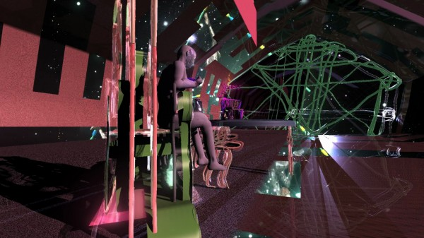
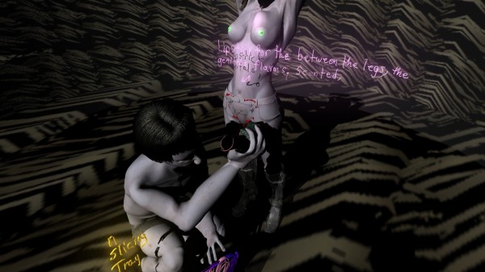
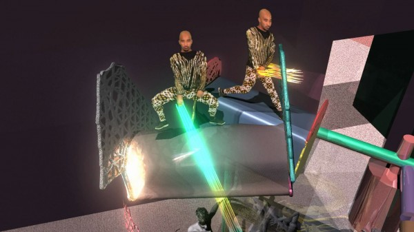

-
Jacolby Satterwhite’s ‘The Matriarch’s Rhapsody’
by A.E. Zimmer February 11, 2013
still from Satterwhite’s Reifying Desire 5, 2013. courtesy the artist and Monya Rowe Gallery, New York.
Jacolby Satterwhite is not very interested in seeing the end of the world– at least when it comes to the world of Final Fantasy IX. He and I are nested in the nook of a quiet coffee house, perfectly off-task in our discussion of the famous role-playing game (RPG) franchise.
“Which one’s your favorite?”
“Six, seven, and eight. Actually, nine is really good too. I actually got to the fourth disc on nine in like four days, and I quit, I didn’t ever beat it. I just went outside and said, ‘ I want a boyfriend!’”
The Matriarch’s Rhapsody, on exhibition at Monya Rowe Gallery through February 16, is a show that resonates with the inner RPG gamer. Perplexingly digital, the solo debut is well versed in fantasy, offering up a fizzing, disoriented world full of CGI animation and cavorting indiscretion. The hybridist result of collaboration, Satterwhite’s work takes impetus from his mother’s drawings, the sketches a means of dealing with a lifelong diagnosis as schizophrenic. Often multi-purposed, her designs for inventions resemble those of an infomercial, as her creations anticipate the inconveniences of daily domestic life and seek their ease. There are designs for a hanging pot rack, a guitar, slicing trays for meats and cheese, barbeque grills, lighters that “are dress designs too.” Her most notable works deal with bodily image: crafted outfits “for the fat body,” elaborate bodysuits with scented pads for the breast, waist, and genitals — areas “under the belly near the cock, the hot spots.”
still from Satterwhite’s Reifying Desire 5, 2013. courtesy the artist and Monya Rowe Gallery, New York.
Using these representations as launch pad, Satterwhite constructs his own animated universe, incorporating modern dance, voguing and ballroom culture to make sense of the drawings, and their attempts to fulfill notions of the modern ideal. While Satterwhite’s maximalist tastes appear unhinged, this is not due to a disinterest in academic formalism. Earning an MFA from UPenn, and a BFA from Maryland Institute College of Art, Jacolby worked eleven years as a painter before his interests turned to performance and modern dance, and eventually, CGI animation.
“I used to always work with my mother’s drawings as prompts for inspiration. If she made a drawing about football, then I got some football equipment from some weird place and did something with it. So, I started playing with after effects and I taught myself Rotoscoping and all these tricks — I figured out that in tracing the drawings I could eschew the lines and make them 3D. Once I figured out I could make her drawings 3D, I started working like crazy. Just stayed up all night, didn’t sleep, just read books and did tutorials. It happened organically… Voguing came into play because, I understood my mother’s drawings were design objects, and voguing houses often try to mimic a more Western, patriarchal American lifestyle, like wearing Louis Vuitton and Chanel. My mother’s trying to subscribe to an entrepreneurial lifestyle — I’m kind of functioning as an apprentice of her, carrying her vision into the world. So, voguing felt right, like a kind of tongue and cheek thing.”
As Sorcerer’s Apprentice, the artist viscerally unites his mother’s visions with his own body. Bedecked in a metallic bodysuit, the only human in his compositions, Jacolby’s “live” presence is incendiary. As he vogues, his jabs, angles, and rotations bring agency to the Reifying Desire videos, his movements literally bestowing life, aid, or complete destruction to its players. “When I do that in front of the green screen, I basically composite what I was envisioning in my hand and the space around me. I trace every limb from the computer, and so I can attach objects to them. When I put the characters all over the landscape, I can lineate the storyline from that. It starts out super loose, in my movement. The objects and the technology kind of synthesize the narrative on its own.”
While Satterwhite’s narrative may come off rather shadowy to his audience, the work is far from aimless. His Reifying Desire series is a suite of six videos, the fifth of which is on prominent display at Monya Rowe. When watched in succession, the videos make up six “chapters” of a loosely knit narrative, telling of the spastic creation, evolution, and obliteration of Jacolby’s amorphous world. Each video is an elastic rumination on a theme, their end a variation on the Alpha and Omega, the Christian tell-all symbol of the beginning and end of days. His settings too, are concerned with classic religious imagery.
“I’m interested in a lot of images form the Renaissance compositions, like high and low registers. For some reason, specifically older Renaissance painters, like Titian, where he had the Madonna and Child in the heavens, separated by clouds, and then the regular people standing on the ground, and its divided by clouds. I think that CGI animation would be the heavens in an ideal world, a sphere of falsehood or something. My performance in real space is sort of a representation of alternatives, and making those worlds bleed together.”
still from Satterwhite’s Reifying Desire 5, 2013. courtesy the artist and Monya Rowe Gallery, New York.
Though when I suggest his celestial backdrops reflect a heavenly quality, he’s hesitant to agree.
“I wouldn’t say they’re heaven or utopian. Well, they are kind of, because it’s kind of like what I want to see happen. The absence of race, the absence of anything political. But it’s inherently political also. It’s a place of folly, and pictorial exploration. Honestly, [it’s] everything I wanted to do as a painter, but it’s moving. The kind of space I wanted to articulate had this whimsy and weirdness.”
As he and I review his videos, our talk turns increasingly spiritual. A neighboring café dweller feels the need to interject. He sets a book on our table.
“You see this? Your computer?” he says, pointing to a line in his book.
“The computer’s number is 666.”
“What does that mean?” Jacolby insists, and is met with silence. Without skipping a beat, he turns back to his iPad and smiles.
“Speaking of that, you’ll see here this image begins to turn into these cruciforms.”
This real-world imposition clarifies Satterwhite’s intent for his sprawling visions. He’s most interested in confounding reality, in creating a landscape so bewildering that any number of dreams can take place in its scope. For Jacolby, it’s a world so irrational that it holds the potential to absolve any grand socio-political statements viewers might demand of it.
“You know I often tell people that another strategy in performing in a virtual space as a black performer is a way to remove the potential for politics…everything is removed from its original context with reality. So, it just takes the term ‘queer’ to another level. It’s not about gay or straight, but queering meaning, de-contextualizing things out of a normal space. This is definitely an anti-normative sphere.”
still from Satterwhite’s Reifying Desire 5, 2013. courtesy the artist and Monya Rowe Gallery, New York.
Reifying Desire 5, the eight-minute video that travels the fate of five cybernated women, is certainly unconcerned with normality. The work is a composite of two influences: posing as Picasso’s infamous Les Demoiselles D’Avignon (1907), and one of his mother’s drawings entitled, Pussy Power. Detailing a number of lotions, gels, ‘lipsticks’ and ‘flavors’ designed to eliminate feminine odor, her instructions are as follows: “For pussy power, pour bubble into the hot water and soak for awhile to turn the smell of pussy off.”
What ensues is a swirling rumination on feminine sexuality and beauty upkeep. In a walled, domestic setting, five sprouts of pubic hair take center stage. The cubist’s painting floats amidst the madness, as Satterwhite’s visage infiltrates the space, setting the hairs afire. The clumps burn away, transforming the sprouts into lanky, mannequin-like figures. Fully blossomed, the female figures bathe, pose, and luxuriate in Jacolby’s attention, as he administers the potions for pure, unadulterated ‘pussy power.’ The women merge, bend together, then part. The hair on their heads grows and merges into one expanding, ropey mass. The women undergo a series of divinations before developing male genitalia. The video scene climaxes, quite literally, as one woman’s phallus shoots millions ‘mini’ Jacolbies into the world. Rioting around the space, the Jacolbies spread and infect, until they’re eventually consumed, then expelled from the scene, pitching the domestic setting into a nebulous, galactic sweep.
The decision to model Reifying Desire 5 after D’Avignon is an interesting one. A shock-and-awe masterpiece, D’Avignon propelled Picasso to unimaginable infamy — its place in the canon marks nothing less than a watershed moment for modern art. The painting’s “primitive art” influence, the African masks for whores’ faces, all offer a flagrant refusal of European influence and “insider art,” altogether. Moreover, and maybe most appealing to Satterwhite, is the refusal of anachronistic rules at the expense of the female form. As John Berger said, “A brothel may not in itself be shocking. But women painted without charm or sadness, without irony or social comment, women painted like the palings of a stockade through eyes that look out as it at death — that is shocking.”
Satterwhite inverts D’Avignon’s female distortion to its opposite end, digitally perfecting Picasso’s five fractured bodies. While the modelesque women symbolize a bodily distortion of their own, they reflect a demand to be rebuilt, ‘fixed’: “in being queer, with a mother with mental illness, I think wanting to be fixed can become a motif that reoccurs in my work.”
Between the bravado and bawd of Satterwhite’s expanse lives the silent ache of traumatized bodies — of bodies, which, in real life, have learned to be insidiously self-aware of their standing in the world. This is evident in the compensative bravado of the vogue dance, in the gyrations of the cyber-women, and most emphatically in Pussy Power itself — the decision to gain advantage through a cleansing of offending female parts.
still from Satterwhite’s Reifying Desire 5, 2013. courtesy the artist and Monya Rowe Gallery, New York.
Satterwhite’s figures demand an existence where they are not considered defunct — so much so that the parameters of what “fixes” a body dissolve, the question of what a body is as fluid and indeterminate as Satterwhite’s loopy terrain. This disparity between body confidence and body consciousness is what brings Reifying Desire 5 into elevated relief. It also gives Satterwhite’s videos a feeling of suspense, of inclement rising action. As the animated world elicits the potential for limitless possibilities, the viewer wonders, will any of these figures really get what they want? At the moment, Jacolby’s wants are in transition. Recent reviews in The New Yorker and The New York Times bring a re-assessment of his goals, and a concern for his practice and himself. I ask him how the recent praise of his work feels, and he takes his time to answer.
“I’m starting to figure out what that means. It’s weird — you think when you get opportunities like this that it will feel great, and it feels great but it’s also very vulnerable. My drawings are everywhere, and it’s explicit, and I feel so naked with that show. Like that show is embarrassing, it’s so naked. I made a degenerate, crazy show. But the thing I like about that show is the blurring authorship, you can’t tell if I’m the misogynist or she is. I know how people criticize male artists, saying, “that’s very male,” the way you frame the female body. It’s not my drawing, but imagine if I had made the drawing called ‘Pussy Power?’”
The Matriarch’s Rhapsody is a reflection of the wants and needs of both mother and son, not only in its sensuality, but in its hunger for consumerism that pervades. These urges are not necessarily pretty, the visuals not thoroughly digestible. But they are honest — like most desires they are desperate, wild and brutal. And it’s true — as Jacolby blurs the authorship between himself and his mother, perceptions begin to bend, and so their mutual and disparate needs hybridize. This blending builds into a chorus that is unflinchingly human — a commiseration in the lifelong urge to make oneself in the image suggested for us.
This realization is indeed bleak, but fortunately, Satterwhite’s purview is still that of a gamer’s, and the gamer refuses fatalism.
Instead, the gamer understands that magical phenomena should not only be expected in play, but seen as the welcome reminder of one’s advancement and progression. The gamer understands race, class, and gender as merely the indefinite ordering of characteristics, all equally useful in the battle to save the game’s world. And the gamer knows that, yes, maybe there’s a satisfaction to seeing the end of the world — all the ugliness of its demise — but this is only because you beat the game. The thrill of the world’s end is great only because you saved it.
Jacolby Satterwhite’s The Matriarch’s Rhapsody is on view at Monya Rowe Gallery, 504 West 22nd Street, New York, NY 10011, through February 16.